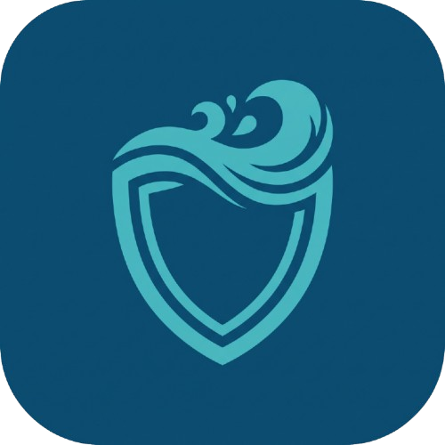

<!doctype html>
<html lang="pt-BR">
<head>
  <meta charset="utf-8">
  <meta name="viewport" content="width=device-width, initial-scale=1">
  <meta name="description" content="Escudo d'Água: protótipo educacional de monitoramento de chuvas orientado à inclusão, à redução de barreiras comunicacionais e aos ODS 10 e 4.">
  <title>Escudo d'Água — Monitoramento de Chuvas</title>
  <link rel="icon" type="image/png" href="./image/escudo-dagua.png">
  <link rel="stylesheet" href="./base.css">
  <link rel="stylesheet" href="./dashboard.css">
</head>
<body>
  <div class="app-shell">
    <aside class="sidebar">
      <a class="brand" href="/" aria-label="Escudo d'Água, início">
        
        <span><strong class="brand-name">Escudo d'Água</strong><small>compilador climático</small></span>
      </a>
      <div class="sidebar-note">
        <span class="eyebrow">CENTRO DE OPERAÇÕES</span>
        <p>Leia o sinal antes da enchente.</p>
        <span class="live-pill"><b></b> ambiente local ativo</span>
      </div>
      <nav class="nav-stack" aria-label="Navegação principal">
        <button class="nav-item active" type="button" data-view="dashboard"><span>▦</span>Visão geral</button>
        <button class="nav-item" type="button" data-view="pesquisa"><span>⌕</span>Pesquisa comunitária</button>
        <button class="nav-item" type="button" data-view="monitoramento"><span>⌖</span>Monitoramento</button>
        <button class="nav-item" type="button" data-view="risco"><span>△</span>Classificação de risco</button>
        <button class="nav-item" type="button" data-view="compilador"><span>&lt;/&gt;</span>Compilador DSL</button>
        <button class="nav-item" type="button" data-view="relatorios"><span>▤</span>Relatórios</button>
      </nav>
      <div class="sidebar-foot">Escudo d'Água · v1.0<br>Pesquisa real · telemetria simulada</div>
    </aside>

    <main class="main-content">
      <div id="dashboardRoot"></div>
      <footer class="site-footer">© 2026. Projeto Escudo d'Água - Todos os direitos reservados. Desenvolvido por Salatiel Muzi Martins</footer>
    </main>
  </div>
  <script src="./dashboard.js"></script>
</body>
</html>
